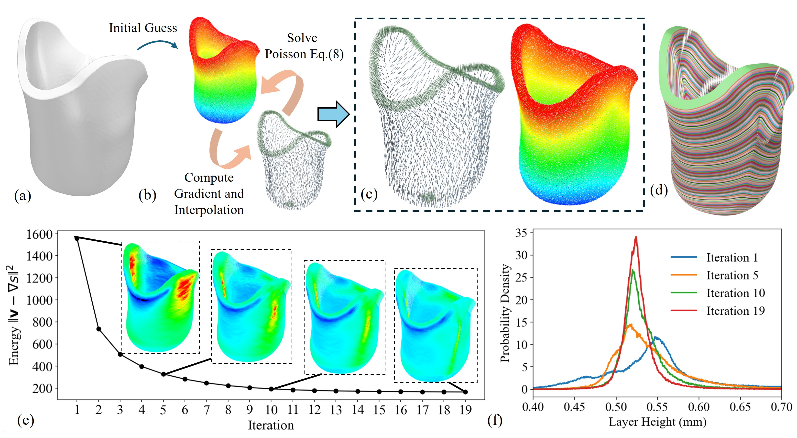
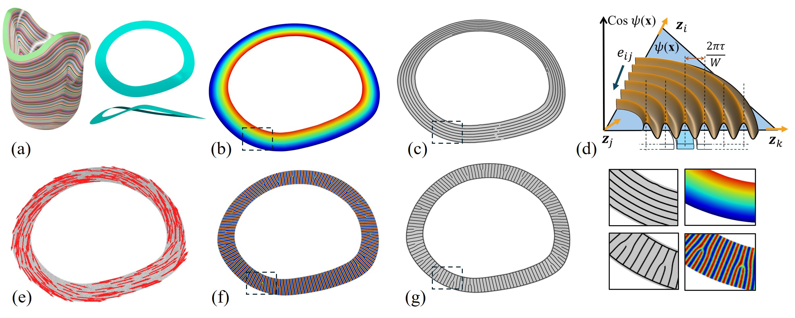
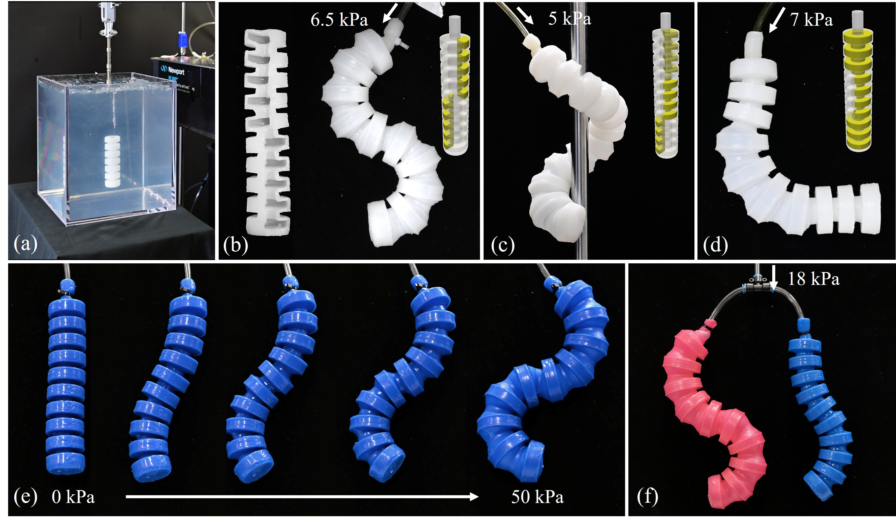
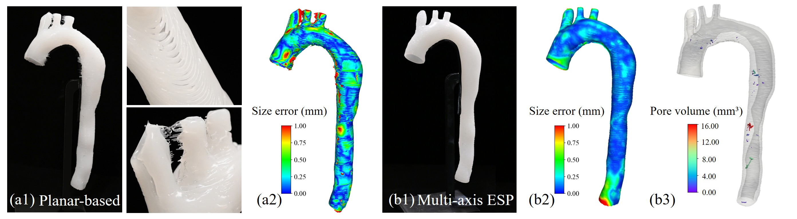

Video Presentation
Field-based Curved Slicing

The computational pipeline of our field-based curved slicing. (a) Input Solid model for slicing (b) The process of iteration-based scalar field optimization. (c) The final gradient field and scalar field lead to optimized layer height variation (d) The curved working surfaces are extracted as a set of iso-surfaces. (e) Error convergence of the objective function, which is well reflected in (f) the layer-height distribution after different numbers of iterations
Staggered width-constrained toolpath generation

Staggered toolpath generated on adjacent layers

An overview of our width-constrained toolpath algorithm. (a) Original isolayer with path-width field. (b) Isolayer after width-based deformation with constant path-width field. (c) Equal-width toolpath generated on deformed iso-layer. (d) Width-constrained toolpath extracted on original isolayer.
Fabrication Result

Printed soft robots with different structures and materials (White: EcoFlex 00-30; Pink: DragonSkin 10A; Blue: MoldStar 30A)

The printed variable-thickness chest model can well mimic chest outlines across different body types.

Compared with conventional planar-based ESP, our method shows good surface finishing, high geometry accuracy, and good infill performance.
BibTeX
@article{Sun31122026,
title={Robot-assisted multi-axis embedded silicone printing for free-form volumetric model},
author={Hailin Sun and Yingjun Tian and Chenyu Xu and Mahdi Bodaghi and Fei Gao and Guoxin Fang},
journal={Virtual and Physical Prototyping},
pages={e2614811},
year={2026},
publisher={Taylor \& Francis}},
doi = {10.1080/17452759.2026.2614811},
URL = {https://doi.org/10.1080/17452759.2026.2614811}
}